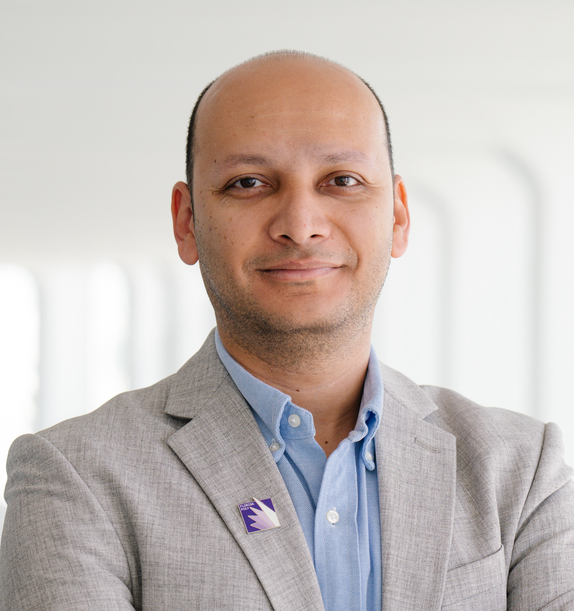

Associate Professor
Co-director, INSIGHT Lab
Department of Computer Science
Florida Polytechnic University
Email: kelish at floridapoly.edu
Google Scholar /
LinkedIn
ORCID: 0000-0001-6060-4090
Address: BARC-2227,
4700 Research Way
Lakeland, FL 33805
Phone: +1 (863) 874-8646
Email: kelish at floridapoly.edu
Since 2016, I have been a faculty member in the Department of Computer Science at Florida Polytechnic University, where I currently serve as an Associate Professor. I am a Co-director of the INSIGHT Lab, where I have been fortunate to collaborate with and mentor several students, including Fulbright scholars and students. Prior to joining Florida Poly, I held a faculty appointment as an Assistant Professor of Computer Science at Purdue University Fort Wayne. In 2018, I received the Florida Poly ABLAZE Award for Excellence in Teaching for exemplary pedagogical practices, exceptional teaching effectiveness, contributions to course and program development, and sustained efforts to foster students’ intellectual growth and critical thinking. I am a Senior Member of the ACM and IEEE.
I am working in Software Security, Software Engineering, and Applied AI/ML, with a specific focus on:
All my publications are available on my Google Scholar.
Selected publications can be found here.
At Florida Polytechnic University, I teach a broad range of undergraduate and graduate courses spanning software engineering and cybersecurity. Over the years, I have designed and delivered courses that integrate hands-on practice, current technologies, and effective teaching methods. My teaching portfolio includes: